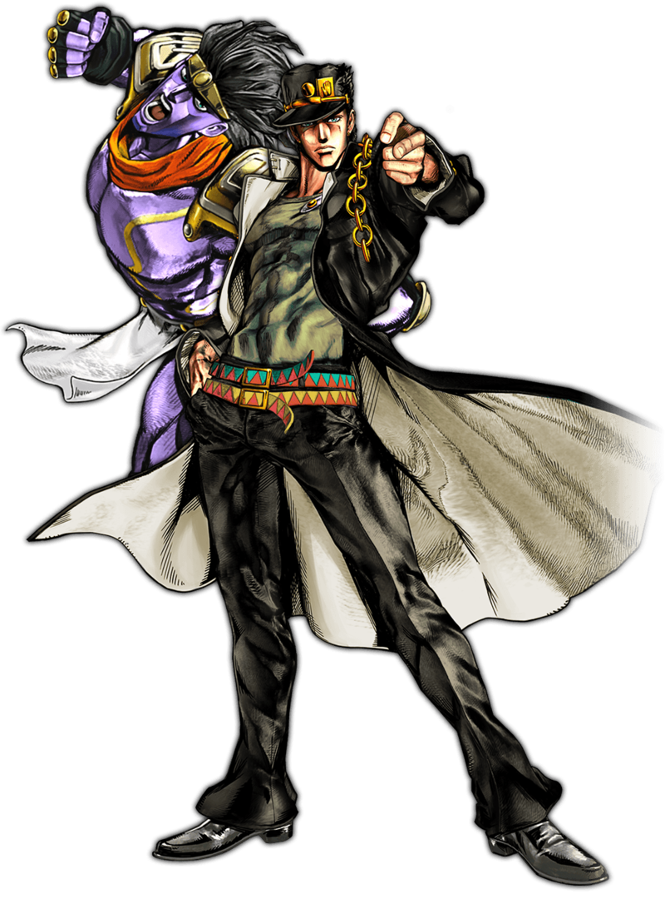

Kujo Jotaro

The character kujo Jotaro
belongs to a popular Japanese anime tv show called Jojo's Bizarre Adventure.
Currently, the show has 6 total seasons. The original manga of this show is already finished
which contains 8 parts with 6 parts already covered by the show. So, 2 more seasons are
expected to release in the near future until the finale.
kujo Jotaro's first appearance is in season 3
which he plays the role of the protagonist. He plays a supporting role or is briefly mentioned
in all of the later seasons until season 6.
Three reasons why I admire kujo Jotaro:
-
He does not give a shit about what people say or do until they really piss him off which is really hard to do.
(no characters in the show has managed best his cool other than the antagonist in season 3)
-
He cares a lot about his homies who fans usually refer as Jobros.
-
He is both physically aesthetic and strong. His power, Star Platinum (known as "stands" in
the show) is extremely fast, accurate, and powerful in dealing damage to enemies. His hidden power
was awakened at the end of season 3, known as "Za Warudo", which can stop time for around 5 to
10 seconds.